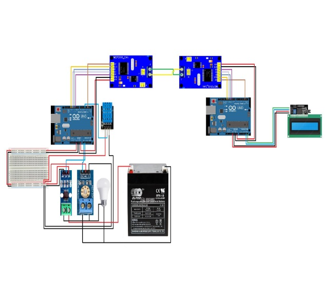
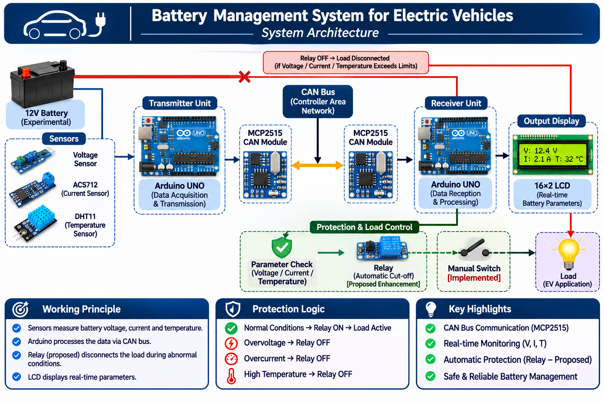
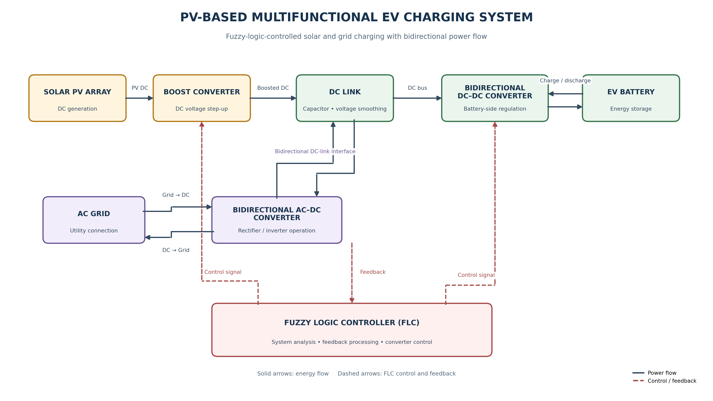
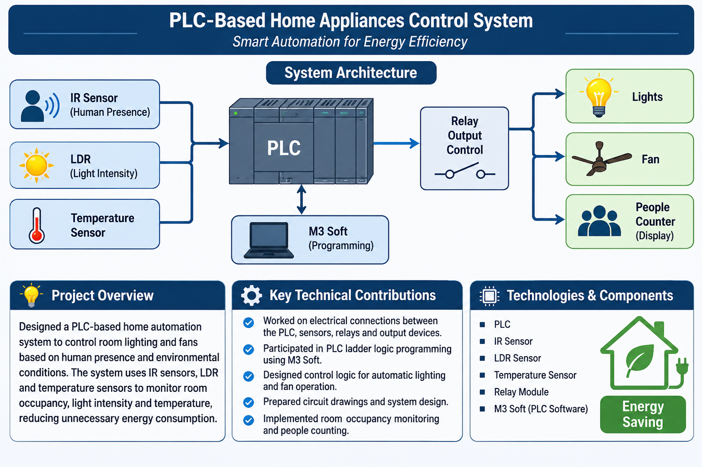

About Me
Electrical & Electronic Engineer with professional experience in renewable energy automation, particularly autonomous robotic solar panel cleaning systems deployed at utility-scale solar plants. My practical experience includes working with DC motors, sensors, motor drivers, Arduino and NodeMCU-based control systems, electronic controller boards, battery testing and DC power management. Through my academic projects, I have also gained practical exposure to battery management systems using CAN Bus communication and MATLAB/Simulink-based solar PV EV charging systems. I also have skills in AutoCAD Electrical, including preparing electrical Single Line Diagrams (SLDs) and electrical layouts. I am passionate about renewable energy, solar PV systems, electrical design, energy storage and sustainable power technologies. I am keen to further develop my engineering skills and contribute to innovative energy solutions.
Technical Skills
Solar & Renewable Energy
Solar PV Fundamentals
PV System Components
Renewable Energy Systems
Electrical Design
AutoCAD
Single Line Diagrams
Electrical Systems
Energy Storage & EV
Battery Management Systems
Battery Testing (LiFePO4)
CAN Bus Communication
Embedded Electronics
Arduino & NodeMCU
Sensors & Motor Drivers
Electronic Control Systems
Power Management
DC Power Management
MPPT-Based Systems
Electrical Power Calculations
Engineering Software
MATLAB / Simulink
ETAP
DIgSILENT
My Projects
A collection of my academic projects and professional engineering experience.

Battery Management System for Electric Vehicles
Developed an Arduino-based Battery Management System prototype using CAN Bus communication to monitor battery voltage, current and temperature, estimate State of Charge (SoC), and display battery parameters in real time. The system uses Arduino UNO, MCP2515 CAN modules, voltage and current sensors, and a DHT11 temperature sensor.
Key Technical Contributions
System Architecture

Proposed Enhancement: An Arduino-controlled relay can automatically disconnect the load when abnormal voltage, current or temperature conditions are detected.

PV-Based Multifunctional EV Charging System
Developed and simulated a PV-based multifunctional EV charging system using MATLAB/Simulink, integrating solar PV generation, grid power and battery energy storage. The system uses Boost and bidirectional converters to manage power flow, enabling battery charging from solar or grid sources and exporting excess solar energy back to the grid. A DC-link capacitor helps maintain stable DC voltage, while a Fuzzy Logic Controller with feedback-based control analyses system conditions and regulates converter operation.
Key Technical Contributions
- Developed and simulated the complete PV-based EV charging system model using MATLAB/Simulink.
- Integrated a PV array, Boost converter and DC-link system for solar power generation and DC voltage management.
- Worked with bidirectional AC-DC and DC-DC converters for grid interaction and battery power flow.
- Implemented Fuzzy Logic Control (FLC) with feedback-based regulation of converter operation.
- Simulated EV battery charging through solar and grid power sources, including excess solar power export to the grid.
- Used a DC-link capacitor to maintain DC voltage stability and reduce voltage ripple.
System Architecture

Robotic Solar Panel Cleaning System
Worked on robotic solar panel cleaning systems deployed at utility-scale solar plants of 10.5 MW and 11 MW. Gained hands-on experience with DC motors, motor drivers, photo sensors, Arduino and NodeMCU-based control systems, voltage and current sensors, and relay circuits. Also contributed to battery testing, electrical power calculations, component selection and DC power management for robotic cleaning systems.
Key Technical Contributions
- Worked with DC motors and motor drivers used in robotic solar panel cleaning systems.
- Worked with photo sensors, voltage and current sensors, and relay circuits for system control and monitoring.
- Worked with Arduino and NodeMCU-based control systems for robotic applications.
- Contributed to battery testing and DC power management for robotic cleaning systems.
- Supported electrical power calculations and component selection for the robotic system.
- Gained hands-on experience with robotic solar panel cleaning systems deployed at 10.5 MW and 11 MW utility-scale solar plants.

PLC-Based Home Appliances Control System
Designed and developed a PLC-based home automation system to control room lighting and fans based on human presence and environmental conditions. The system uses IR sensors, LDR and temperature sensors to monitor room occupancy, light intensity and temperature, helping reduce unnecessary energy consumption.
Key Technical Contributions
- Worked on physical electrical connections between the PLC, sensors, relays and output devices.
- Participated in PLC ladder logic programming using M3 Soft.
- Worked on control logic for automatic lighting and fan operation.
- Integrated IR sensors, LDR and temperature sensors for occupancy and environmental monitoring.
- Prepared electrical circuit drawings and worked on the overall control-system connections.
- Worked on room occupancy monitoring and people-counting functionality.
Professional Experience
Electrical & Electronic Engineer
Pristyn Automations Private Limited
September 2023 – March 2025
Worked on autonomous robotic solar panel cleaning systems deployed at utility-scale solar power plants of 10.5 MW and 11 MW, contributing to electrical systems, embedded electronics, battery testing and power management.
- Worked with DC motors, motor drivers, sensors and relay-based control circuits for robotic cleaning systems.
- Worked with Arduino and NodeMCU-based control boards, including electronic components and control circuits.
- Contributed to the development and testing of electronic controller boards using EDA/ECAD tools.
- Performed battery testing and BMS-related activities, including separate LiFePO4 battery testing.
- Worked with MPPT-based power management systems and DC power supply arrangements.
- Supported electrical power calculations, component selection and battery capacity requirements for robotic systems.
Contact Me
I am open to opportunities in Electrical Engineering, Solar PV Design, Renewable Energy and Energy Systems.
Email: abaramalingam@gmail.com
LinkedIn: Abaraajithan Ramalingam